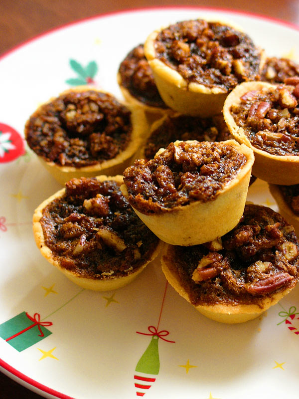

Pecan Tarts

This recipe provides instruction in making mini-pecan pies, or pecan
tarts. They are easy and quick to make. I like making them in the fall
around Thanksgiving. Kids are great at making the mini pie shells because
you just need to press the dough into the muffin tin and little hands make
quick work of this.
Shopping List
Ingredients
- 1 cup butter
- 6 ounces cream cheese, softened
- 2 cups all-purpose flour
- 4 eggs
- 3 cups packed brown sugar
- 4 tablespoons melted butter
- 1 pinch salt
- 1 teaspoon vanilla extract
- 1 cup chopped pecans
Instructions
350 degrees F for 30 minutes
Makes 48 tarts
- Make pastry
- Cream butter or margarine and cream cheese.
- Add flour and mix well.
- Make into 48 balls.
- place one ball in each cup of a mini tart pan.
- Use your fingers to press out into a tart shell.
- Make filling
- Break the eggs, but do not beat.
- Add sugar, melted butter, salt, vanilla and pecans.
- Mix well.
- Fill the tart shells.
- Bake
- Bake at 350 degrees F (180 degrees C).
-
Bake for 30 minutes or until delicately browned.